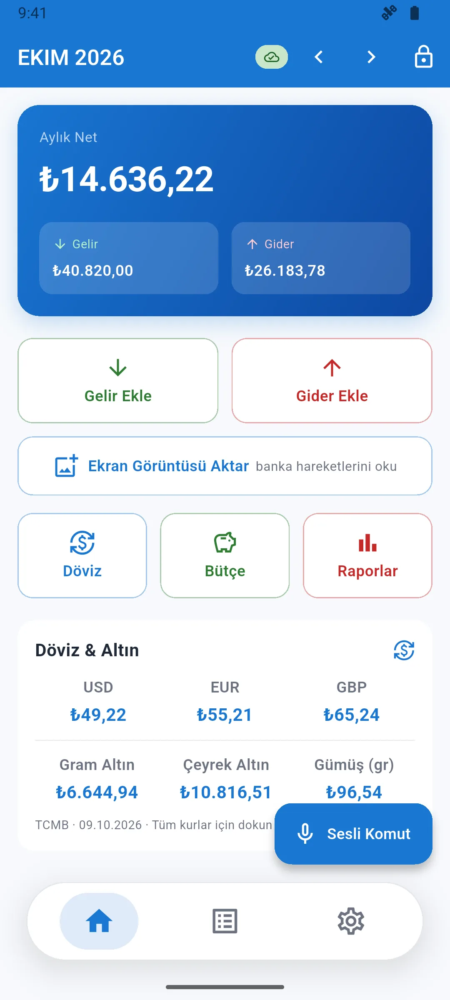
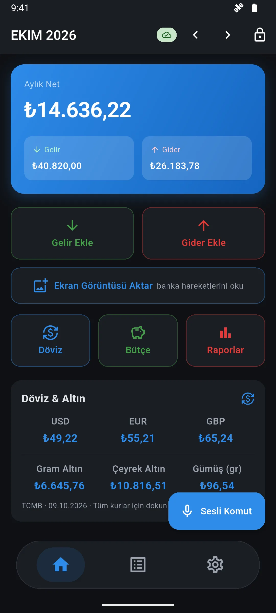
Finans Defteri
Kayıt tutmayı zahmetsiz hale getiren kişisel finans uygulaması.
- Sesle, ekran görüntüsüyle veya elle işlem ekleme
- Aylık rapor, PDF çıktısı, bütçe ve hatırlatıcılar
- Çevrimdışı çalışma ve PIN kilidi
Bilgisayar Mühendisliği Öğrencisi · İnönü Üniversitesi
Kotlin, Jetpack Compose ve Flutter ile fikirden yayına uçtan uca mobil uygulamalar geliştiriyorum. Gerçek işletmeler için web siteleri üretiyor, siber güvenlik topluluğunda Ar-Ge çalışmalarını yürütüyorum.
Projeler
Detayları, ekran görüntülerini ve kullanılan teknolojileri görmek için bir projeye tıklayın.


Kayıt tutmayı zahmetsiz hale getiren kişisel finans uygulaması.
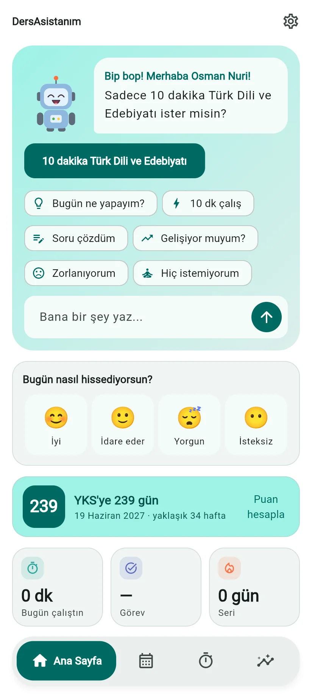
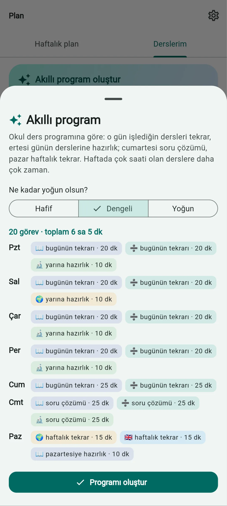
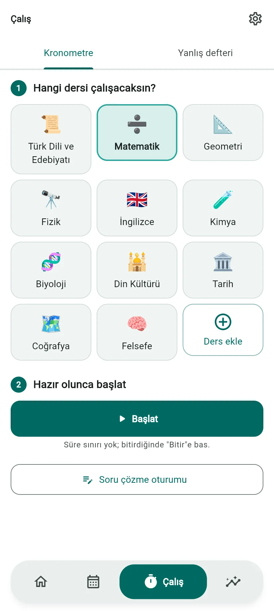
Ortaokul ve LGS öğrencileri için maskotlu, internetsiz çalışan ders çalışma asistanı.
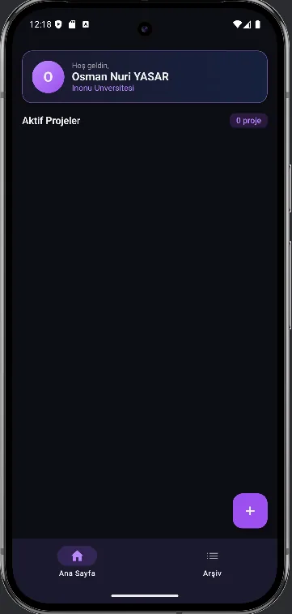
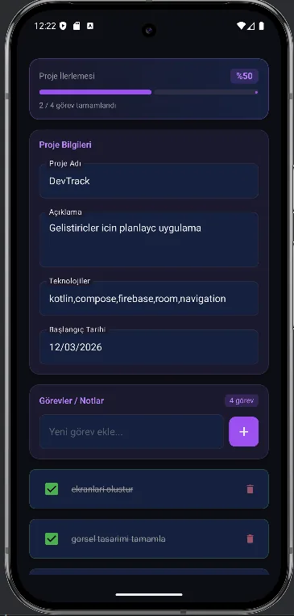
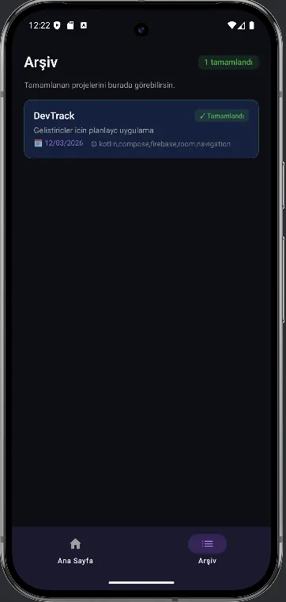
Çalışmaları düzenli ve sistematik ilerletmek için tasarlanmış planlayıcı uygulaması.
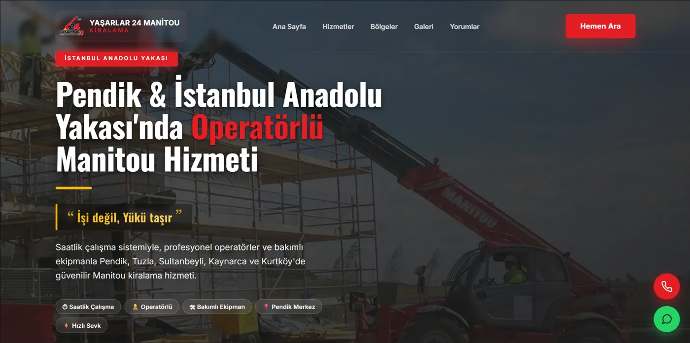
Gerçek bir işletme için geliştirilen, mobil uyumlu kurumsal web sitesi.
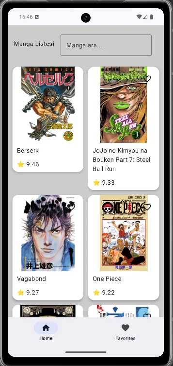
Mangaları isim ve puanlarıyla listeleyen, API destekli Compose uygulaması.
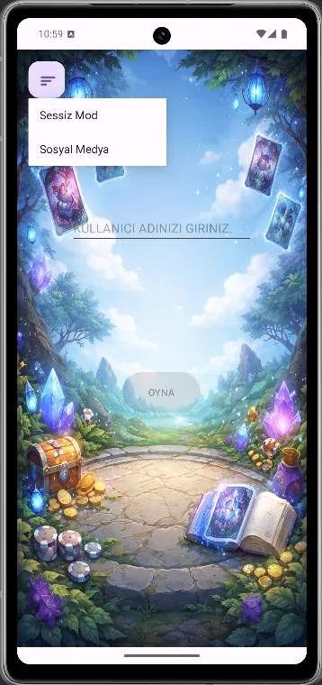
Kart stratejisine dayalı, sıra tabanlı mobil oyun (demo v1.0).
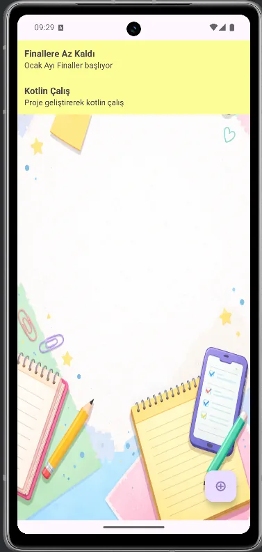
Plan ve görevleri kaydeden, kaydırarak silme destekli not uygulaması.
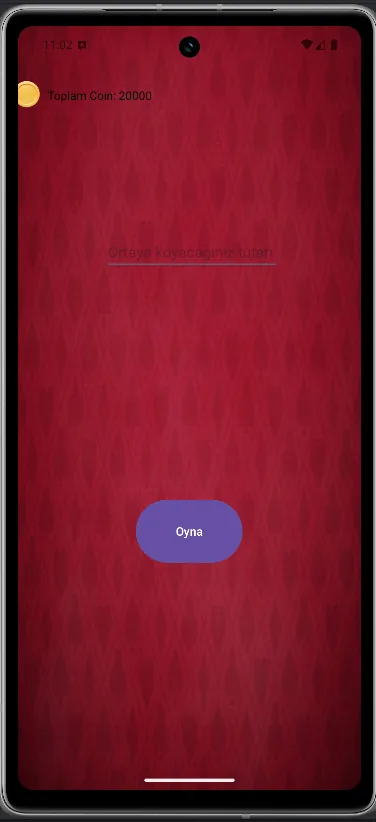
Klasik blackjack mantığını mobil cihaza taşıyan kart oyunu.
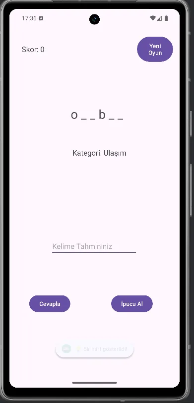
Farklı kategorilerdeki kelimeleri tahmin etmeye dayalı kelime oyunu.
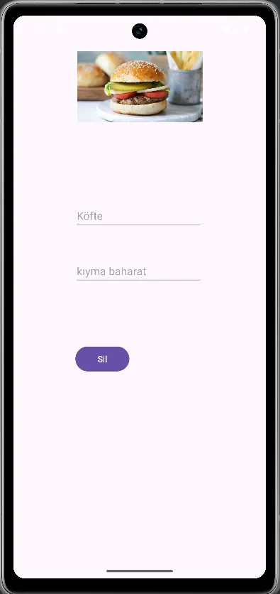
Yemekleri tarif ve görselleriyle cihaza kaydeden tarif defteri.
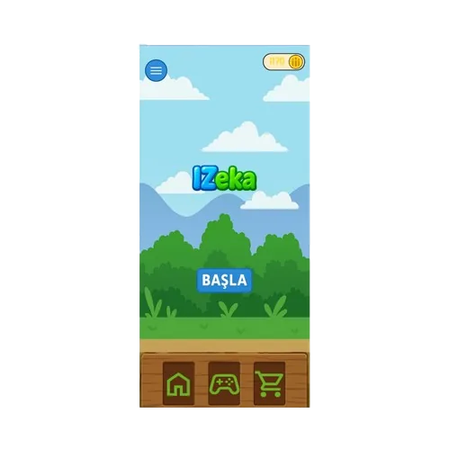
INUFEST'te sunulan, ekipçe geliştirilen oyunlaştırılmış eğitim platformu.
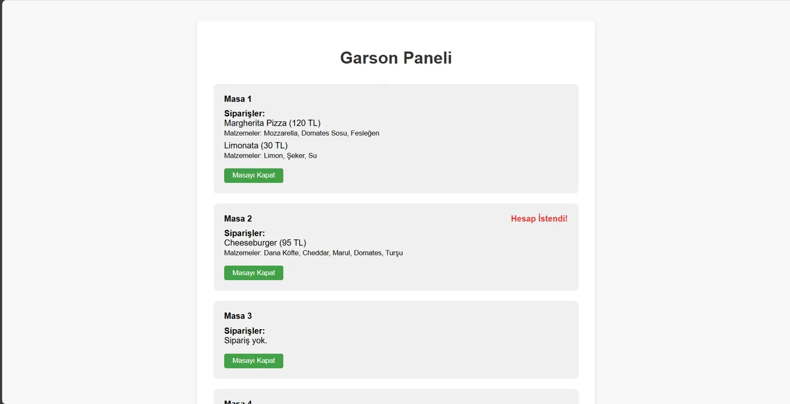
Garson paneli ve müşteri sipariş menüsünden oluşan web arayüzü.
Hakkımda
Merhaba, ben Osman Nuri Yaşar. İnönü Üniversitesi Bilgisayar Mühendisliği öğrencisiyim. Kendimi tek bir alanla sınırlamayan, çok yönlü bir geliştiriciyim.
En deneyimli olduğum alan mobil uygulama geliştirme. Bunun yanında web projeleri geliştiriyor, C ve Python ile çalışıyor ve siber güvenlik alanında kendimi geliştiriyorum. Güncel teknolojileri ve yapay zekâ alanındaki gelişmeleri yakından takip ediyorum.
Deneyim & Eğitim
Ayrıntılar için bir kayda tıklayın.
İletişim
Mobil uygulama fikirleri, staj fırsatları veya proje iş birlikleri için bana ulaşabilirsiniz.